[1]:
import matplotlib.pyplot as plt
import straph as sg
[2]:
plt.rcParams["figure.figsize"] = (12,9)
Introduction¶
Formally, a stream graph  is defined by a set of time instants
is defined by a set of time instants  , a
finite set of nodes
, a
finite set of nodes  , a set of temporal nodes 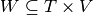,
and a set of temporal links 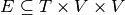. The set of time
instants can be continuous or discrete. Likewise interactions (temporal links)
between two nodes can be discrete 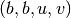 or continuous
, a set of temporal nodes 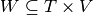,
and a set of temporal links 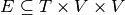. The set of time
instants can be continuous or discrete. Likewise interactions (temporal links)
between two nodes can be discrete 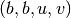 or continuous  (with 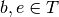 and 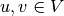).
(with 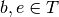 and 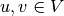).
Stream graphs can be used to model any connected structure evolving through time. For instance, IP traffic between entities can be modelised as follow: whenever two IP adresses exchanges packets we record a temporal link between these two nodes corresponding to the duration of the exchange.
First of all, we load an artificial example that will be used in the following steps of analysis and visualisation.
[3]:
path_directory = "examples/"
S = sg.read_stream_graph(path_nodes=path_directory + "example_nodes.sg",
path_links=path_directory + "example_links.sg")
Basic visualisation¶
[4]:
fig = S.plot()

We refer to this Notebook for more details on visualisation.
Stream Graph Object¶
Paradigme: In Straph
simple data structures should be represented by built-in python objects, resulting in a more
comprehensive and intuitive code.
After a comparative analysis we choose to use the following data structures for manipulating
stream graphs. (As numerous algorithms and basic computations are not based on vectorials
operations Numpy
arrays were deemed to slow.)
A StreamGraph
object is constituted by five main attributes:
times: the time window of the stream graph ()nodes: the list of nodes present in the stream graph ()node_presence: a list of list, each list corresponds to a node and contains its presence time ( )
)links: the list of links present in the stream graph ( )
)node_presence: a list of list, each list corresponds to a link and contains its presence time ()
[5]:
S.times
[5]:
[0.0, 10.0]
The stream graph spans from instant  to
to 
[6]:
S.nodes
[6]:
[0, 1, 2, 3, 4, 5]
S contains 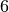 nodes. Nodes are always represented by integers, their labels can be stored in
the attribute node_to_label.
[7]:
S.node_to_label
[7]:
{0: 'A', 1: 'B', 2: 'C', 3: 'D', 4: 'E', 5: 'F'}
[8]:
S.node_presence
[8]:
[[0.0, 5.0, 7.0, 10.0],
[0.0, 10.0],
[0.0, 1.0, 4.0, 6.0],
[0.0, 1.0, 2.0, 4.0, 8.0, 10.0],
[0.0, 10.0],
[0.0, 4.0, 6.0, 10.0]]
As we can see on the above figure, node  with index is present
from time
to
with index is present
from time
to  , absent from to
, absent from to  and present again from to .
and present again from to .
[9]:
S.links
[9]:
[(0, 1), (1, 2), (1, 4), (2, 3), (2, 4), (3, 4), (3, 5), (4, 5)]
[10]:
S.link_presence
[10]:
[[0.0, 4.0, 8.0, 9.0],
[4.0, 5.0],
[7.0, 7.0],
[0.0, 1.0],
[5.0, 5.0],
[2.0, 4.0, 8.0, 10.0],
[3.0, 4.0],
[0.0, 4.0, 6.0, 10.0]]
The link  (corresponding to nodes and
(corresponding to nodes and  ) with
index is active from time to
) with
index is active from time to  and again from
to .
and again from
to .
A short description of a stream graph scale can be obtained with .describe()
[11]:
S.describe()
Nb of Nodes : 6
Nb of segmented nodes : 11.0
Nb of links : 8
Nb of segmented links : 11.0
Nb of event times : 11
We can add or remove nodes and links to/from a stream_graph object
(we refer to this notebook for further information).
We can easily add a new node. Let’s add  present from to and from 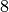 to 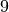.
present from to and from 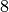 to 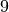.
[12]:
S.add_node('G',[0,3,8,9])
[12]:
6
Likewise we can add a new link. If one of the extrimities is new, it will be added
automatically for the duration of the link. Let’s add a link 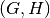 from  to and from to .
to and from to .
[13]:
S.add_link(('G','H'),[1,3,8,9])
_ = S.plot()

Let’s remove these new interactions between nodes and  .
.
[14]:
S.remove_link(('G','H'))
_ = S.plot()

Note : If we remove a node, all of its links will be automatically removed.
[15]:
S.remove_node('G')
S.remove_node('H')
[16]:
S.plot()
plt.show()

Manipulating a Stream Graph Object¶
There are several manners to manipulate a StreamGraph object: - Iterate on nodes - Iterate on links -
Iterate on temporally ordered links - Iterate on temporally ordered events
[17]:
for n,np in zip(S.nodes,S.node_presence):
for b,e in zip(np[::2],np[1::2]): # Even index are arrivals and odd index departure
print("Node ",S.node_to_label[n]," is present from ",b," to ",e)
Node A is present from 0.0 to 5.0
Node A is present from 7.0 to 10.0
Node B is present from 0.0 to 10.0
Node C is present from 0.0 to 1.0
Node C is present from 4.0 to 6.0
Node D is present from 0.0 to 1.0
Node D is present from 2.0 to 4.0
Node D is present from 8.0 to 10.0
Node E is present from 0.0 to 10.0
Node F is present from 0.0 to 4.0
Node F is present from 6.0 to 10.0
[18]:
for l,lp in zip(S.links,S.link_presence):
for b,e in zip(lp[::2],lp[1::2]): # Even index are arrivals and odd index departure
u,v = l
print("Link ",(S.node_to_label[u],S.node_to_label[v])," is present from ",b," to ",e)
Link ('A', 'B') is present from 0.0 to 4.0
Link ('A', 'B') is present from 8.0 to 9.0
Link ('B', 'C') is present from 4.0 to 5.0
Link ('B', 'E') is present from 7.0 to 7.0
Link ('C', 'D') is present from 0.0 to 1.0
Link ('C', 'E') is present from 5.0 to 5.0
Link ('D', 'E') is present from 2.0 to 4.0
Link ('D', 'E') is present from 8.0 to 10.0
Link ('D', 'F') is present from 3.0 to 4.0
Link ('E', 'F') is present from 0.0 to 4.0
Link ('E', 'F') is present from 6.0 to 10.0
[19]:
for e in S.ordered_links():
if e[0] == 1:
_, t0, t1, u, v = e
print("Link arrival \t:",(t0,t1,S.node_to_label[u],S.node_to_label[v]))
if e[0] == -1:
_, t1, u, v = e
print("Link departure \t:",(t1,S.node_to_label[u],S.node_to_label[v]))
Link arrival : (0.0, 4.0, 'A', 'B')
Link arrival : (0.0, 1.0, 'C', 'D')
Link arrival : (0.0, 4.0, 'E', 'F')
Link departure : (1.0, 'C', 'D')
Link arrival : (2.0, 4.0, 'D', 'E')
Link arrival : (3.0, 4.0, 'D', 'F')
Link arrival : (4.0, 5.0, 'B', 'C')
Link departure : (4.0, 'A', 'B')
Link departure : (4.0, 'D', 'E')
Link departure : (4.0, 'D', 'F')
Link departure : (4.0, 'E', 'F')
Link arrival : (5.0, 5.0, 'C', 'E')
Link departure : (5.0, 'B', 'C')
Link departure : (5.0, 'C', 'E')
Link arrival : (6.0, 10.0, 'E', 'F')
Link arrival : (7.0, 7.0, 'B', 'E')
Link departure : (7.0, 'B', 'E')
Link arrival : (8.0, 9.0, 'A', 'B')
Link arrival : (8.0, 10.0, 'D', 'E')
Link departure : (9.0, 'A', 'B')
Link departure : (10.0, 'D', 'E')
Link departure : (10.0, 'E', 'F')
[20]:
for e in S.ordered_events():
if e[0] == 2:
_,t0,t1,u = e
print("Node arrival \t:",(t0,t1,S.node_to_label[u]))
elif e[0] == 1:
_, t0, t1, u, v = e
print("Link arrival \t:",(t0,t1,S.node_to_label[u],S.node_to_label[v]))
elif e[0] == -1:
_, t1, u, v = e
print("Link departure \t:",(t1,S.node_to_label[u],S.node_to_label[v]))
elif e[0] == -2:
_,t1,u = e
print("Node departure \t:",(t1,S.node_to_label[u]))
Node arrival : (0.0, 5.0, 'A')
Node arrival : (0.0, 10.0, 'B')
Node arrival : (0.0, 1.0, 'C')
Node arrival : (0.0, 1.0, 'D')
Node arrival : (0.0, 10.0, 'E')
Node arrival : (0.0, 4.0, 'F')
Link arrival : (0.0, 4.0, 'A', 'B')
Link arrival : (0.0, 1.0, 'C', 'D')
Link arrival : (0.0, 4.0, 'E', 'F')
Link departure : (1.0, 'C', 'D')
Node departure : (1.0, 'C')
Node departure : (1.0, 'D')
Node arrival : (2.0, 4.0, 'D')
Link arrival : (2.0, 4.0, 'D', 'E')
Link arrival : (3.0, 4.0, 'D', 'F')
Node arrival : (4.0, 6.0, 'C')
Link arrival : (4.0, 5.0, 'B', 'C')
Link departure : (4.0, 'A', 'B')
Link departure : (4.0, 'D', 'E')
Link departure : (4.0, 'D', 'F')
Link departure : (4.0, 'E', 'F')
Node departure : (4.0, 'D')
Node departure : (4.0, 'F')
Link arrival : (5.0, 5.0, 'C', 'E')
Link departure : (5.0, 'B', 'C')
Link departure : (5.0, 'C', 'E')
Node departure : (5.0, 'A')
Node arrival : (6.0, 10.0, 'F')
Link arrival : (6.0, 10.0, 'E', 'F')
Node departure : (6.0, 'C')
Node arrival : (7.0, 10.0, 'A')
Link arrival : (7.0, 7.0, 'B', 'E')
Link departure : (7.0, 'B', 'E')
Node arrival : (8.0, 10.0, 'D')
Link arrival : (8.0, 9.0, 'A', 'B')
Link arrival : (8.0, 10.0, 'D', 'E')
Link departure : (9.0, 'A', 'B')
Link departure : (10.0, 'D', 'E')
Link departure : (10.0, 'E', 'F')
Node departure : (10.0, 'A')
Node departure : (10.0, 'B')
Node departure : (10.0, 'D')
Node departure : (10.0, 'E')
Node departure : (10.0, 'F')
In Straph almost
all algorithms are based on these data structures.